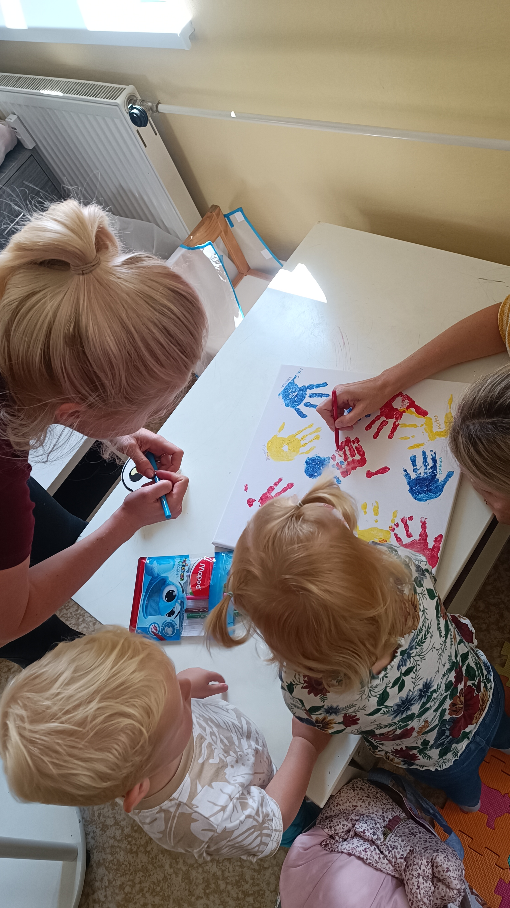

Pedagožka & kóderka se zkušenostmi z PR
Kontakt
Tel. číslo: + 420 773 597 974
email: petra.cinkrautova@gmail.com
Životopis na LinkedIn
Mé motto:
"Všechno zkoumejte, dobrého se držte."
Praxe
| květen 2025 - současnost | Kódérka statických webových stránek - na volné noze |
| leden 2024 | Realizace mého autorského projektu "Kde začíná a končí má svoboda na internetu" na základní škole |
| říjen 2022 - květen 2023 | Pedagogická praxe na Základní škole a Mateřské škole, Baška, příspěvková organizace |
| listopad 2014 - září 2017 | PR Executive v agentuře Bison&Rose |
| červen 2016 - září 2016 | stáž v Lidovky.cz |
| prosinec 2010 - květen 2014 | administrativní asistentka ve společnosti McCann-Erickson Prague spol. s. r. o., International Advertising Agency |
Dosažené vzdělání
| 2021 - 2023 | Certifikát, Pedagogické studium pro učitele SŠ a 2. st. ZŠ |
| 2014 - 2016 | Magistr, studijní program Mediální a komunikační studia, obor Elektronická kultura a sémiotika, Fakulta humanitních studií, Univerzita Karlova |
| 2011 - 2014 | Bakalář, obor Studium humanitní vzdělanosti, Fakulta humanitních studií, Univerzita Karlova |
| 2006 - 2010 | Gymnázium Český Těšín |
Znalosti a dovednosti
Jazykové znalosti
- Český jazyk - rodilý mluvčí
- Anglický jazyk - C1
- Německý jazyk - B2
Digitální znalosti
- HTML & CSS, VS Code, GitHub, Figma
- MS Office (Word, Excel, PowerPoint, Outlook)
- Canva, Sli.do, Padlet, Flippity, Webnode, Nearpod
Měkké dovednosti
- komunikativnost
- schopnost naslouchat
- vynalézavost a učenlivost
- kritické myšlení
- trpělivost a spolehlivost
- vůdčí a organizační schopnosti
Další dovednosti
- Řidičský průkaz, skupina B
Certifikáty
- V zajetí sítě - Informační seminář ke společnému vzdělávání od NPI
- Communication Skills: Become clear, concise and confident - kurz na Udemy
- Staň se kódérkou - kurz od Czechitas
Mé zájmy

Největším koníčkem jsou mé děti, kterým se ráda věnuji.
K mému překvapení si však stále dokážu najít prostor k učení se novým věcem.
Kromě toho ve mně v posledních letech roste nadšení pro cyklistiku a horskou turistiku. Taky běhám na čerstvém vzduchu, ať už utíkám před stresem nebo od domácích povinností. Plavu.
Ráda chodím do divadla a na koncerty. Láska k hudbě mě doposud stále neodradila od mých pěveckých projevů. Čtu. Z kinematografie moc ráda sleduji historická dramata a současnou severskou tvorbu. A po večerech se věnuji kódování a tvůrčímu psaní.
Zajímavosti o mně
Založila jsem baby club pro rodiče s malými dětmi v obci, v níž žiju, a několik let jej vedla. Poté jsem jeho vedení úspěšně předala.
Napsala jsem knihu pro ženy na rodičovské dovolené, v níž konfrontuji myšlenky Marie Montessori s náročnou každodenností matky na rodičovské dovolené. V knize nabízím povzbuzení pro maminky, sdílím tipy do výchovy a filosofuji nad smyslem mateřství.
Během celého svého vysokoškolského studia v Praze jsem se sama živila. Pracovala jsem na třičtvrteční úvazek a k tomu navštěvovala prezenční studium na VŠ. Tato několikaletá zkušenost mě naučila velké píli, flexibilitě, schopnosti nevzdávat se a umět jít občas i za pomyslné hranice svých možností.
V době své adolescence jsem vedla dva volnočasové kluby pro mládež.
Během dospívání jsem také jako frontmanka zpívala v kapele a skládala vlastní písně.
Ukázka mé práce
- Tento životopis (stránky jsou responzivní)
- Webové stránky Povzbuzení pro mámy
- Baby club Paleček
- Autorský článek na Lidovky.cz
- Advertorial z PR praxe
- Ukázka z projektového dne "Kde začíná a končí má svoboda na internetu" & Propagační materiál
- Můj profil "Montessori u nás doma" na Facebooku a Instagramu